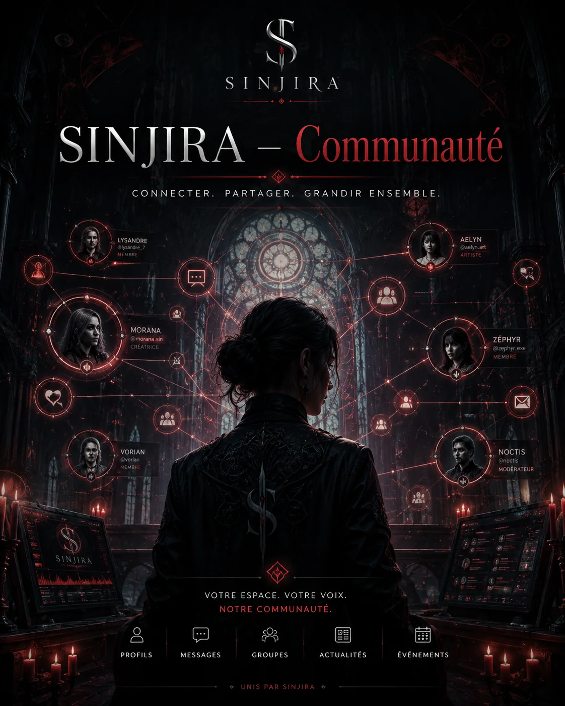

Réseau social · identité réelle du compte
Communauté SINJIRA™
Discutez comme membre réel de la communauté avec votre pseudo de compte. Cet espace est toujours séparé du rôle-play de votre personnage.

Discutez comme membre réel de la communauté avec votre pseudo de compte. Cet espace est toujours séparé du rôle-play de votre personnage.
